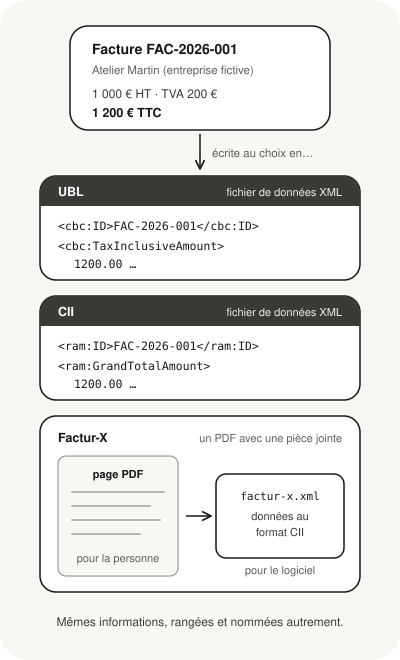

Une facture électronique peut s'écrire dans trois formats : UBL, CII ou Factur-X. Les deux premiers sont des fichiers de données, lisibles par un logiciel. Le troisième, Factur-X, est un PDF qu'une personne peut lire, accompagné d'un fichier de données au format CII. Les trois peuvent porter exactement la même facture : ils rangent et nomment les informations différemment. Le bon format est d'abord celui qu'acceptent votre logiciel et votre plateforme.
- UBL et CII sont deux façons d'écrire une facture sous forme de fichier de données XML.
- Factur-X est un PDF lisible qui contient, en pièce jointe, un fichier de données au format CII.
- Les trois s'appuient sur un même modèle européen de facture, la norme EN 16931.
- On reconnaît le format d'un fichier sans outil spécial : pièce jointe du PDF, ou première balise du fichier.
- Convertir un format en un autre, ce n'est pas renommer : il faut faire correspondre chaque information, puis contrôler le résultat.
Cet article fait suite à Facturation électronique : ce qui change pour les TPE en 2026 et 2027, qui présente le calendrier de la réforme et le rôle des plateformes agréées.
Pourquoi plusieurs formats ?
Les entreprises échangent des factures entre logiciels depuis bien avant la réforme. Plusieurs familles de formats se sont développées en parallèle, portées par des organismes différents : UBL par un consortium international de normalisation (OASIS), CII par l'organisme des Nations unies chargé de faciliter les échanges commerciaux (UN/CEFACT). Factur-X est né plus tard, d'une initiative franco-allemande, pour les entreprises qui voulaient garder un PDF lisible tout en ajoutant des données exploitables.
Plutôt que d'en imposer un seul, la réforme française retient un « socle » de trois formats. Le choix ne relève donc pas du « meilleur » format, mais de ce que vos outils savent produire et lire.
Le XML expliqué sans jargon
UBL, CII et la partie données de Factur-X sont écrits en XML.
Sur une facture PDF, le montant « 1 200,00 € » est écrit quelque part sur la page : une personne le repère, un logiciel doit le chercher. Dans un fichier XML, ce montant est rangé dans une balise dont le nom dit « montant total toutes taxes comprises ». C'est ce qu'on appelle des données structurées.
Image du quotidien : le PDF est une lettre ; le fichier XML est un formulaire administratif où chaque case porte un intitulé. Deux formulaires différents peuvent demander les mêmes informations avec des cases nommées et placées autrement : c'est toute la différence entre UBL et CII.
UBL, CII, Factur-X : qui est quoi

- UBL (Universal Business Language) : un fichier XML. Une facture commence par la balise
Invoice, un avoir parCreditNote. Ce format est très utilisé dans les échanges entre entreprises en Europe. - CII (Cross Industry Invoice) : un autre fichier XML, avec d'autres noms de balises et une autre organisation. Une facture commence par la balise
rsm:CrossIndustryInvoice. - Factur-X : un PDF au format d'archivage (dit PDF/A-3), qui affiche la facture comme d'habitude et qui contient, en pièce jointe, un fichier de données au format CII, en général nommé
factur-x.xml. Factur-X n'est donc pas un troisième langage indépendant : sa partie données, c'est du CII.
Un modèle commun : la norme EN 16931
Si ces formats peuvent porter la même facture, c'est qu'ils s'appuient sur une même liste européenne des informations d'une facture et de leurs règles.
La norme donne à chaque information un identifiant : le numéro de facture est le terme métier BT-1, le montant toutes taxes comprises le BT-112. UBL et CII disent ensuite chacun, à leur façon, dans quelle balise ranger ce BT-1 ou ce BT-112. Un prochain article de la série détaillera ce modèle et ses règles.
Les profils
Factur-X, par exemple, existe en plusieurs profils, du plus léger (MINIMUM, BASIC WL), qui ne décrit pas les lignes de la facture, au plus complet (EXTENDED). Le profil compte autant que le format : deux fichiers Factur-X peuvent ne pas contenir les mêmes informations. Les profils acceptés dans le cadre de la réforme française sont fixés par ses spécifications officielles.
La facture d'Atelier Martin dans chaque format
Reprenons la facture fictive de la série : Atelier Martin facture une prestation de 1 000 € hors taxes, avec 200 € de TVA, soit 1 200 € toutes taxes comprises. Voici où se trouvent six informations de cette facture.
| Information (terme de la norme) | Balise en UBL | Balise en CII (et donc dans Factur-X) |
|---|---|---|
| Numéro de facture (BT-1) | cbc:ID |
ram:ID, dans le bloc du document |
| Date d'émission (BT-2) | cbc:IssueDate |
udt:DateTimeString, dans ram:IssueDateTime |
| Devise (BT-5) | cbc:DocumentCurrencyCode |
ram:InvoiceCurrencyCode |
| Total hors taxes (BT-109) | cbc:TaxExclusiveAmount |
ram:TaxBasisTotalAmount |
| Total de la TVA (BT-110) | cbc:TaxAmount, dans le bloc des taxes |
ram:TaxTotalAmount |
| Total toutes taxes comprises (BT-112) | cbc:TaxInclusiveAmount |
ram:GrandTotalAmount |
Les deux extraits ci-dessous montrent les mêmes valeurs dans chaque format. Chaque ligne indique la balise, la valeur, puis ce qu'elle signifie.
- cbc:IDFAC-2026-001Numéro de la facture, unique chez le vendeur.
- cbc:IssueDate2026-11-20Date d'émission, écrite année-mois-jour avec des tirets.
- cbc:DocumentCurrencyCodeEURDevise de la facture : l'euro.
- cbc:TaxExclusiveAmount1000.00Total hors taxes, dans le bloc des totaux de la facture.
- cbc:TaxAmount200.00Montant total de la TVA, dans le bloc des taxes.
- cbc:TaxInclusiveAmount1200.00Total toutes taxes comprises.
- ram:IDFAC-2026-001Le même numéro, dans le bloc qui décrit le document.
- udt:DateTimeString20261120La même date, écrite sans tirets : le code de format 102 l'indique.
- ram:InvoiceCurrencyCodeEURLa même devise, dans le bloc du règlement.
- ram:TaxBasisTotalAmount1000.00Le même total hors taxes.
- ram:TaxTotalAmount200.00Le même montant de TVA, accompagné de sa devise.
- ram:GrandTotalAmount1200.00Le même total toutes taxes comprises.
Ces extraits sont volontairement incomplets : une vraie facture contient aussi le vendeur, l'acheteur, leurs identifiants, les lignes, la catégorie de TVA, les nouvelles mentions obligatoires… Ils montrent comment les informations sont rangées, mais ne constituent pas des fichiers valides à transmettre. Les versions exactes des formats et des règles de contrôle applicables en France sont fixées par les spécifications officielles de la réforme : elles ne sont pas reprises ici et doivent être vérifiées avant toute mise en œuvre.
On voit déjà deux pièges classiques : la date ne s'écrit pas de la même façon dans les deux formats, et le total de TVA ne se trouve pas au même endroit. Un logiciel qui « recopie » simplement les valeurs d'un format à l'autre produirait un fichier faux.
Comment reconnaître le format d'un fichier
Vous avez reçu ou exporté un fichier de facture et vous ne savez pas de quel format il s'agit ? Deux vérifications sans risque suffisent, sans rien modifier.
![Arbre de décision. Si le fichier se termine par .pdf, ouvrez le panneau des pièces jointes du lecteur PDF : une pièce jointe factur-x.xml indique du Factur-X ; aucune pièce jointe indique un PDF ordinaire, qui n'est pas une facture électronique. Si le fichier se termine par .xml, ouvrez-le avec un éditeur de texte et regardez la première balise : Invoice indique de l'UBL ; rsm:CrossIndustryInvoice indique du CII. Un avoir UBL commence par CreditNote. Ce repérage donne le format, pas le profil ni la validité du fichier.](../../assets/img/blog/reconnaitre-format-facture.svg)
- Le fichier se termine par .pdf. Ouvrez-le dans votre lecteur PDF habituel et affichez le panneau des pièces jointes (souvent une icône de trombone). Une pièce jointe nommée
factur-x.xmlindique une facture Factur-X. Sans pièce jointe, c'est un PDF ordinaire. - Le fichier se termine par .xml. Ouvrez-le avec un éditeur de texte (Bloc-notes, TextEdit en mode texte brut) sans l'enregistrer. Après une éventuelle première ligne technique, la première balise indique le format :
InvoiceouCreditNotepour l'UBL,rsm:CrossIndustryInvoicepour le CII.
Ce repérage indique le format, pas le profil ni la conformité du fichier : un fichier peut être au bon format et contenir une erreur.
Peut-on convertir d'un format à l'autre ?
Oui, c'est même fréquent : beaucoup de logiciels et de plateformes savent lire un format et en produire un autre. Mais une conversion n'est pas un changement de nom de fichier. Elle repose sur une table de correspondance (on parle de « mapping ») qui indique, pour chaque information, où la prendre dans le format de départ et où la ranger dans le format d'arrivée, en respectant ses règles d'écriture.
Trois points de vigilance :
- Une conversion ne crée pas d'information. Si le fichier de départ ne contient pas le SIREN du client, le fichier d'arrivée ne l'aura pas non plus.
- Toutes les informations n'ont pas toujours d'équivalent exact, en particulier entre profils de niveaux différents. Une information peut se perdre en route.
- Le résultat doit être contrôlé, comme un fichier produit directement : structure, informations obligatoires, cohérence des montants.
Que faire si deux outils n'utilisent pas le même format
La situation la plus courante : votre logiciel exporte un format, et votre plateforme ou un client en attend un autre. Avant de changer d'outil :
- Demandez à votre plateforme agréée quels formats et quels profils elle accepte en entrée : elle peut souvent recevoir plusieurs formats et se charger de la transmission.
- Demandez à l'éditeur de votre logiciel quels formats et profils il sait produire, et s'il est déjà relié à une plateforme agréée.
- Notez précisément le message affiché en cas de refus ou de rejet : il indique souvent s'il s'agit d'un problème de format, de profil ou d'information manquante.
- Évitez de modifier un fichier à la main pour le faire accepter : la correction doit se faire à la source, dans le logiciel ou ses réglages.
UBL et CII sont deux façons d'écrire une facture en données structurées ; Factur-X est un PDF lisible qui transporte des données CII. Tous trois reposent sur la même norme européenne, mais rangent et nomment les informations différemment. Avant de changer d'outil, vérifiez quel format et quel profil votre logiciel produit, et lesquels votre plateforme accepte.